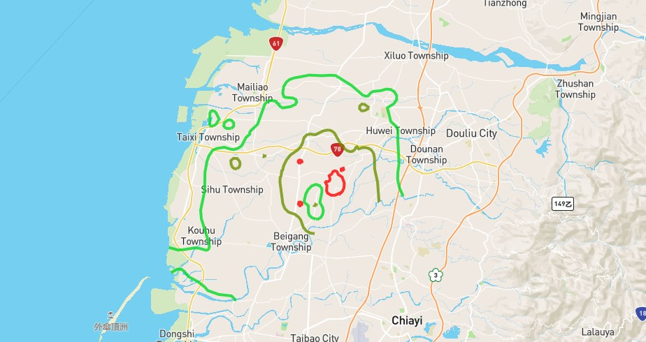

Project Overview

The project aims to develop a Stratum Subsidence Monitoring Platform focused on Chiayi and Yunlin cities. Utilizing data from 2019,2020, and 2021
the platform offers features such as year and city data comparisons, customizable map styles, dataset uploads for user-spesific data, and screenshot functionality
While the platform is not currently real-time, it strives to establish an open-source web platform, providing industry, goverment, and academic professionals
with comprehensive tools for displaying, analyzing, and managing land subsidence data, maximizing the use of established observation networks and IoT information.